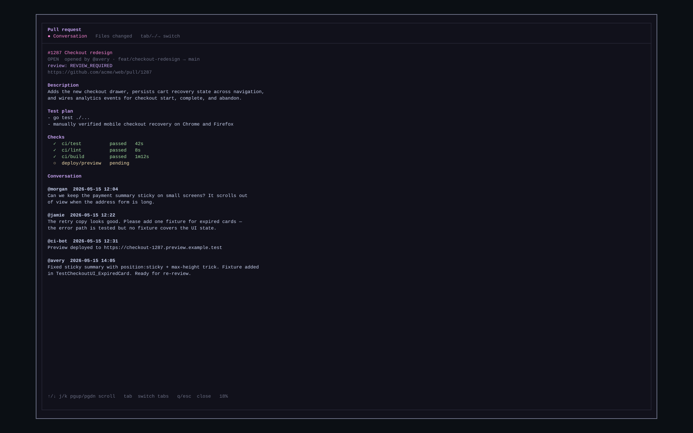
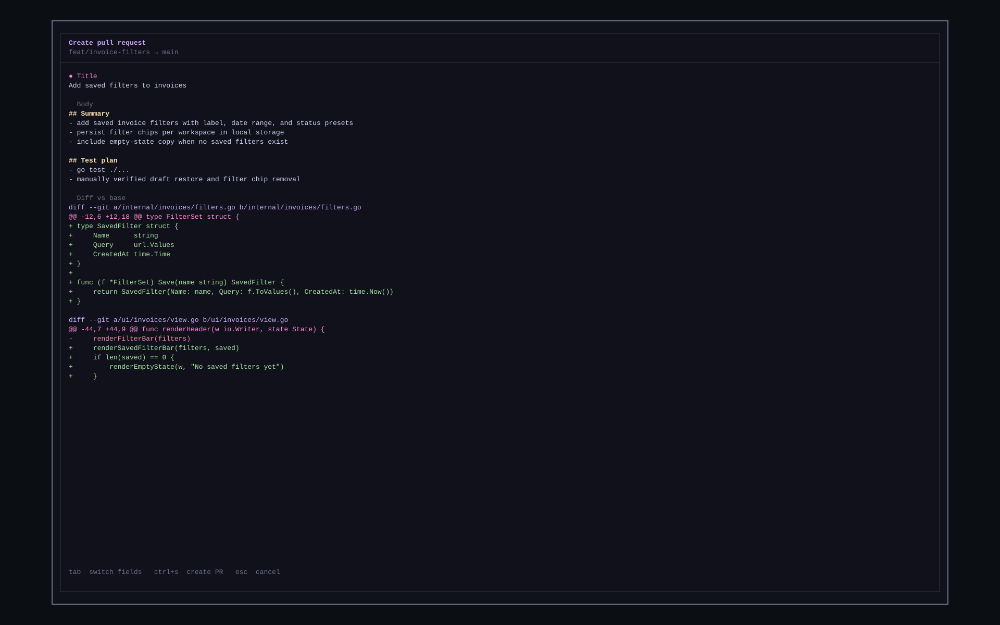

Every branch, still running where you left it.
gw puts a sidebar of your git worktrees inside tmux. Switching swaps panes on the tmux server, so each worktree keeps its shell, editor, dev server and coding agent alive in the background.
go install github.com/redrick/gw@latest
switching is tmux swap-pane — nothing is restarted, nothing is typed into your shell
// features
Built for juggling branches and agents.
Run a coding agent in one worktree, a dev server in another and review a PR in a third. gw keeps them all alive and tells you which one needs you.
Live worktrees
Every worktree lives in its own tmux pane. Background ones stay parked, with processes and scrollback intact.
Agent prompts surfaced
When Claude, Codex or a similar agent stops to ask for permission, the worktree turns orange and a desktop notification takes you straight there.
Pull requests inline
Open PR numbers sit beside each branch. Press P to read the conversation and diff, C to draft and open a new PR.
Frequent section
The worktrees you use most, weighted by recency, are pinned on top. One key jumps straight to one.
Tabs per worktree
Open extra shells inside a worktree. They follow it when you switch away and come back.
Create and clean up
New worktrees track an existing remote branch when one exists. Removing one asks first.
// how it works
One slot on screen, the rest parked.
gw runs one tmux session. The window you look at has a sidebar and a single slot. Every other worktree waits in its own hidden window.
You pick a worktree
From the sidebar, search with /, or a frequent key.
The shown pane is parked
It goes back to its own storage window, still running.
The target pane is swapped in
It's resized to fit the slot and focused, all on the tmux server, with no keystrokes sent.
// pull requests
Review and open PRs without leaving the sidebar.
Powered by the GitHub CLI. PR numbers load in the background, so the list is usable right away.


gh pr create.// keys
Keyboard first.
Vim-style movement in the sidebar, ^a as the tmux prefix.
sidebar
| ↑ ↓ / k j | move cursor |
| enter / o | open worktree |
| 1 – 6 | open from the frequent section |
| / | search worktrees |
| n | create a new worktree |
| a | add an existing repo to tracking |
| D | remove worktree, with confirmation |
| d | stop tracking a project |
| P · C | PR details · create a PR |
| r · q | refresh · quit and kill the session |
tmux · prefix ^a
| ^a c | new shell tab |
| ^a n / p | next / previous tab |
| ^a s | focus the sidebar |
| ^a [ | scroll mode |
// install
Up and running in a minute.
Run gw from any directory. If you're inside a git repo, it's tracked automatically. Running it again reattaches to the open session.
# with Go 1.24+ $ go install github.com/redrick/gw@latest # or from source $ git clone https://github.com/redrick/gw $ cd gw && make install $ gw
tmuxthe session gw runs ingitworktrees, branches, remotesghPR badges, details and creation (authenticate withgh auth login)notify-sendoptional: desktop notifications when an agent waits for input
Notifications target Linux with a freedesktop daemon. Raising the terminal when a notification is clicked works on X11 only. The sidebar's ⚠ indicator works everywhere. State lives in ~/.config/gw/state.json.